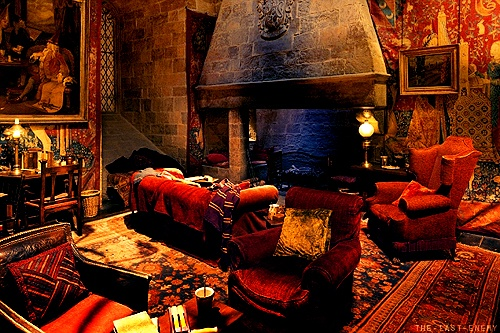
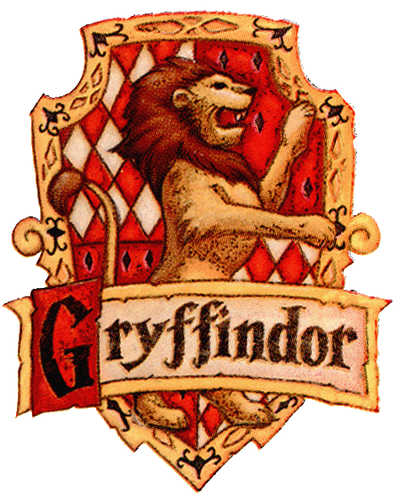
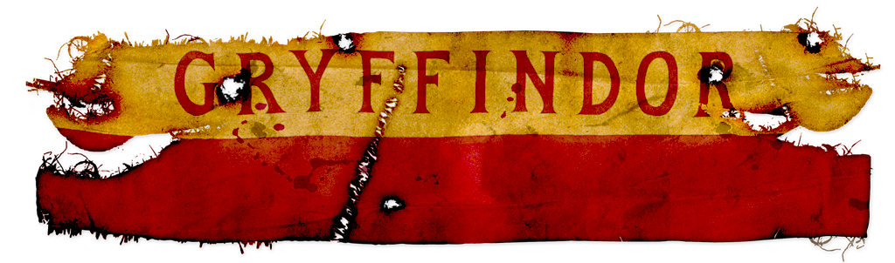

Golden Gryffindor
"You might belong in Gryffindor,
Where dwell the brave at heart,
Their daring, nerve and chivalry
Set Gryffindors apart"
- The Sorting Hat

Gryffindor Common Room

On Running with the Lions
Gryffindor house is one of the four Houses of Hogwarts School of Witchcraft and Wizardry
and was founded by Godric Gryffindor. Gryffindors are known for their nerve, chivalry and daring,
although many view Gryffindor as an arrogant house. Members reside in the Gryffindor tower.
According to J. K. Rowling, Gryffindor roughly corresponds to the element of fire.
